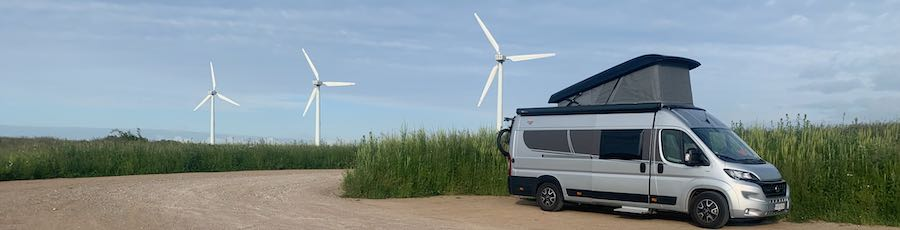
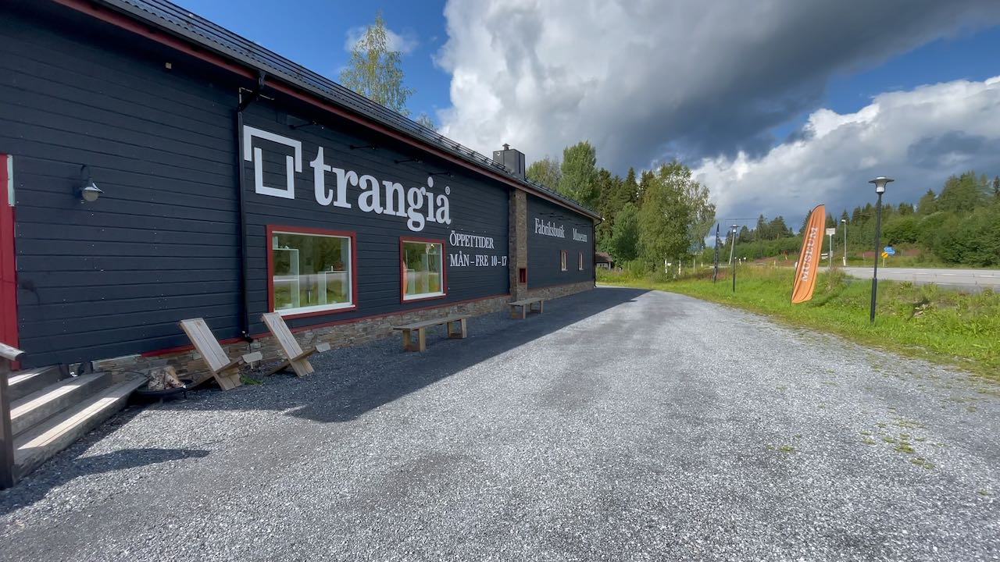
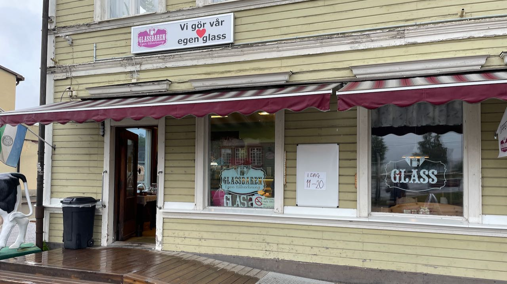

Pompulla Maailmalle

Vanlaiffia koko perheen voimalla
Trangian tehtaanmyymälän kautta Ruotsin suurimmalle koskelle

Jatkoimme matkaa kohti Ruotsin korkeinta vesiputousta Tännforssenia. Poikkesimme ajaessa Trangian tehtaanmyymälässä ostamassa lisää kokkausvälineitä keittiöön. Lopulta löysimme huikean puskaparkin. Lue lisää Ruotsin seikkailun toisesta osasta.
Ruotsin parasta jäätelöä Bräckessa

Pakkasimme autoon polkupyörät ja lähdimme seikkailemaan ympäri Ruotsia. Teimme seikkailusta myös videon, jonka voit katsoa YouTubessa. Jos haluat lukea, kuinka löysimme Ruotsin parasta jäätelöä, niin tarina löytyy täältä.
Pompulla Maailmalle YouTubessa
Yhteystiedot löytyvät täältä.